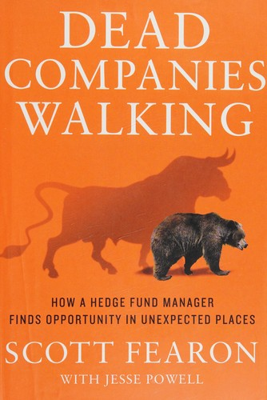

斯科特·费伦（Scott Fearon）毕业于斯坦福大学，后在西北大学凯洛格商学院取得MBA学位。1985年起，他先后在休斯顿德州商业银行和旧金山GT Capital担任投资组合经理。1990年，他用从家人和朋友处筹集的种子资金创办了自己的对冲基金Crown Capital Management，此后三十余年间专注于中小型上市公司的多空策略。截至成书时，他做空过的公司中有超过两百家最终走向破产。
这本书不是一本教人做空的技术手册，而是一部关于企业失败的田野调查。费伦的独特之处在于，他不满足于坐在办公室里研读财报和模型，而是花大量时间亲自拜访公司管理层——与CEO和CFO面对面交谈，到门店实地观察，甚至在停车场数客流。他相信，数字可以粉饰，但人的判断力和诚实程度骗不了面对面的观察者。
费伦将企业走向衰亡的原因归纳为六种致命错误。第一，只从近期经验中学习。他讲述了一家石油钻井平台公司Global Marine的案例：其CFO展示了一张二十年图表，声称平台利用率从未低于70%，十八个月后公司破产，利用率跌至25%。第二，过度依赖曾经成功的公式。费伦坦承自己也犯过此错——他的GARP（合理价格成长）模型曾让他错失了星巴克和好市多这两个大牛股，因为模型显示它们"估值过高"。第三，误读客户需求。他以零售商Cost Plus为例，说明管理层执意转向高端商品，反而疏远了核心顾客群。第四，陷入狂热叙事。从1980年代的德州石油泡沫到互联网泡沫，再到2008年次贷危机，每一轮周期都有人相信"这次不一样"。第五，无法适应行业的结构性变迁。百视达（Blockbuster）死守门店模式而被Netflix颠覆，正是这类错误的典型。第六，管理层在物理或情感上脱离一线运营，在"象牙塔"中凭报告做决策，与真实业务渐行渐远。
这六条错误的共同根源，是费伦反复强调的确认偏误（confirmation bias）。他写道："确认偏误——相信你想相信的东西、忽略相反的信息——摧毁了无数的投资组合和企业。"当管理层陷入否认，拒绝承认现实，一家公司就成了"行走的死者"，股价归零只是时间问题。他还特别指出，PIPE交易（上市公司私募融资）几乎是企业的"临终抢救"，以折扣价向大型投资者兜售股份，实际上极少能挽救公司的命运。
全书更深层的论点，不在于做空本身，而在于对失败的态度。费伦认为，美国经济之所以曾经充满活力，正因为它能够拥抱失败、容忍试错。真正健康的企业和经济体，是那些愿意正视失误、迅速调整的。正如《出版人周刊》（Publishers Weekly）的评价："这本生动的书最终要传达的是，'重新学会热爱失败'可以帮助美国恢复费伦认为我们经济所需要的冒险精神。"乔治·华盛顿大学教授、畅销书作家亚历克·克莱因（Alec Klein）的推荐语则写道："费伦的书读起来像一场酣畅淋漓的冒险——生动、有趣、信息量丰富——它提供了关于华尔街乃至更广阔世界的持久教训。"《CFO》杂志也评价道："如果你想读一本犀利、深刻、辛辣幽默、清晰明快的书，一本能帮你避免对企业犯下致命错误的书，就拿起《Dead Companies Walking》。"
对于中国读者而言，这本书的价值不仅在于投资视角。它提供了一套识别企业病症的诊断框架：管理层是否活在过去的成功里？是否对行业变局视而不见？是否在用融资手段掩盖经营的溃败？这些问题同样适用于评估任何一家企业——无论你是投资者、创业者，还是管理者。